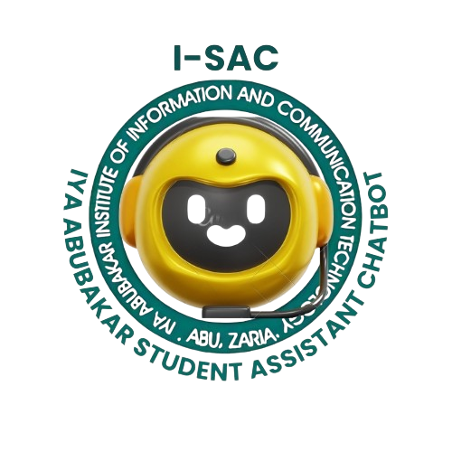

<ion-header>
  <ion-toolbar class="head">
    <ion-button class="button" shape="round" color="warning" fill="outline" (click)="portal()" slot="start">School Portal</ion-button>
    <ion-button class="button" shape="round" color="warning" fill="outline" (click)="website()" slot="end">School Website</ion-button>
    <div class="logo-container" (click)="refresh()">
      
      <ion-title class="header-title">CHAT WITH ISAC</ion-title>
    </div>
  </ion-toolbar>
</ion-header>

<ion-content class="chat-container">
  <div class="chat-history" #scrollMe>
    <!-- Loop through messages and display them -->
    <ion-card *ngFor="let message of messages" [ngClass]="{'user-message': message.sender === 'user', 'bot-message': message.sender === 'bot'}">
      <ion-card-content>
        <div class="message-content">
          <!-- Display icon based on sender -->
          <ion-icon *ngIf="message.sender === 'user'" name="person-circle"  class="message-icon"></ion-icon>
          
          
          <!-- Display the message text -->
          <div class="message-text">
            <div *ngIf="message.sender === 'bot' && message.text.endsWith('.pdf')">
              <p class="pdf-link">{{ message.text }}</p>
              <ion-button expand="block" (click)="handleButtonClick(message.text)">View PDF</ion-button>
            </div>
            <div *ngIf="!message.text.endsWith('.pdf')">
              {{ message.text }}
            </div>
          </div>
        </div>
      </ion-card-content>
    </ion-card>
    <!-- Typing indicator -->
    <div *ngIf="isTyping" class="typing-indicator">ISAC is typing...</div>
  </div>
</ion-content>

<ion-footer>
  <ion-toolbar class="foot">
    <ion-input
    class="custom-input"
    type="text"
    label="How Can I Help You Today?"
    label-placement="floating"
    fill="outline"
    [(ngModel)]="userMessage"
    placeholder="e.g. tell me about iaiict"
    (keyup.enter)="sendMessage()">
  </ion-input>  
  <ion-button class="button" shape="round" color="warning" fill="outline" (click)="sendMessage()" slot="end"><ion-icon name="send"></ion-icon></ion-button>
  </ion-toolbar>
</ion-footer>
